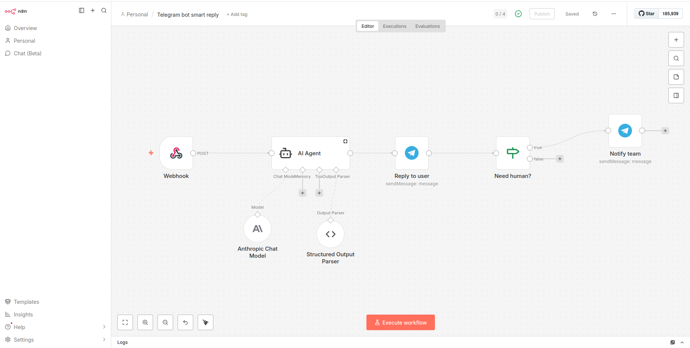

New bot - Create default commands with one click
Configure and manage multiple Telegram bots from a single Odoo instance. Each bot can have its own commands, responses, and settings.
Create custom commands with multiple response types: text messages, images, documents, locations, and inline keyboard buttons.
Automatically create leads from Telegram conversations. Link Telegram users to Odoo contacts. All messages are logged in the partner's chatter.
Forward unmatched messages to external webhooks (n8n, Zapier, custom APIs) for advanced automation and AI-powered responses.
New bot - Create default commands with one click

Bot with configured commands

List of bot commands

/start command response in Telegram


Set Fallback Webhook URL on the bot to forward any message that does not match a configured command to an external workflow. Ideal for plugging in an LLM (Claude, GPT) for natural-language replies and routing business-critical conversations to a human team.

Example n8n workflow: Webhook → Claude (structured output) → Reply to user → Conditional team escalation
JSON payload with bot id, chat / user info, phone, raw text and the full Telegram update — ready for the LLM to consume.
Have the workflow classify the request and notify your internal Telegram group with the LLM-summarised query and the user's contact when human attention is needed.
Get your bot token from @BotFather in Telegram and add it to Odoo
Define commands like /start, /help, /price with custom responses and buttons
Click "Start Bot" to activate webhook and begin receiving messages
Create interactive inline buttons with URL links, callback actions, or navigation to other commands. Build complex conversation flows.
Full logging of all incoming and outgoing messages. Track conversation history, user interactions, and bot performance.
When a user interacts with your bot, the module automatically creates a contact (res.partner) with their Telegram info. When they share their phone number, the system links the Telegram contact to an existing contact or creates a new one. Enable CRM integration to automatically create leads from conversations.
Send formatted text with HTML support and variable substitution
Send photos with optional captions
Share PDF, Excel, or any file type
Create interactive keyboard layouts
Use placeholders in your response text:
{first_name} - User's first name{last_name} - User's last name{user_name} - Telegram username{full_name} - First + Last name{chat_id} - Telegram chat ID
Contact us at nadozirny.s@gmail.com or visit many2one.online